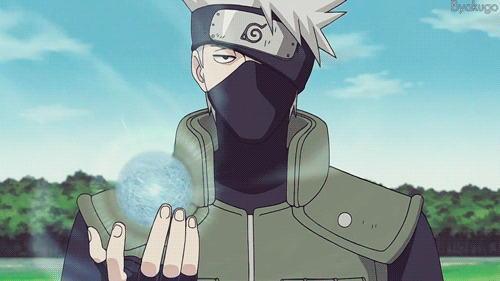
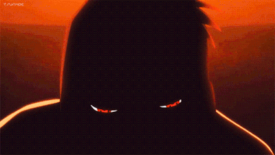
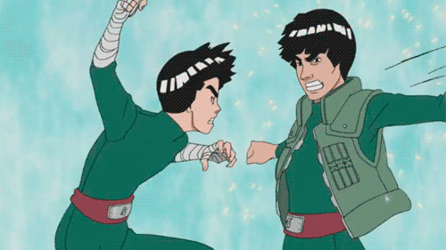
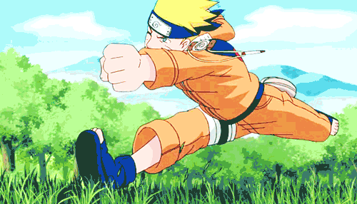
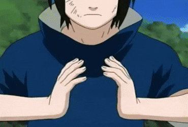
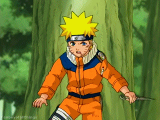
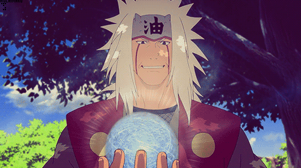
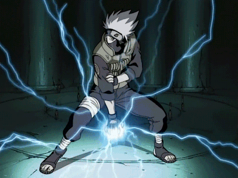

.gif) Jutsu (術, Literally meaning:
skills/techniques) are the mystical arts a ninja will utilise in battle. To use a technique, the ninja will need
to use their chakra. To perform a technique, the ninja will bring out and release the two energies of chakra. By
forming hand seals, the ninja is able to manifest the desired
technique. Because of the extensive number of hand seals and different combinations, there are thousands of
potential techniques to be discovered.
Jutsu (術, Literally meaning:
skills/techniques) are the mystical arts a ninja will utilise in battle. To use a technique, the ninja will need
to use their chakra. To perform a technique, the ninja will bring out and release the two energies of chakra. By
forming hand seals, the ninja is able to manifest the desired
technique. Because of the extensive number of hand seals and different combinations, there are thousands of
potential techniques to be discovered.
Origin
Ninshū (忍宗, Viz: Ninja Creed, Literally meaning: Shinobi Sect) is the religion and the peaceful precursor of
modern ninjutsu created by Hagoromo Ōtsutsuki, the first one to understand and teach the mystery of chakra. The
teachings of ninshū were meant to give people a better understanding of themselves, as well as others, and lead
the world into an era of peace. Ninshū would eventually come to be known as ninjutsu, a more weaponised version
of the Sage's teachings.
Main Jutsu
Types
Ninjutsu
Ninjutsu (忍術, English TV: Ninja
Art, Literally meaning: Ninja Techniques) is one of the three main jutsu categories. Ninjutsu is the most
nebulous of the three, and may most simply be described as anything that is not genjutsu or taijutsu. Most
ninjutsu require chakra and hand seals, but this is not always the case since the mere usage of weaponry
qualifies as ninjutsu.
Genjutsu
Genjutsu (幻術, Literally meaning: Illusionary Techniques) is one of the main
jutsu categories which uses chakra. Unlike ninjutsu, the effects of genjutsu are not real, being only sensory
illusions experienced by those who fall victim to it. According to the Second Mizukage, genjutsu falls under the
broad category of Yin Release.
Taijutsu
Taijutsu (体術, Literally meaning:
Body Techniques) is a basic form of techniques and refers to any techniques involving the martial arts or the
optimisation of natural human abilities. Taijutsu is executed by directly accessing the user's physical and
mental energies, relying on the stamina and strength gained through training. It typically does not require
chakra, though chakra may be used to enhance its techniques. Taijutsu generally requires no hand seals to
perform, occasionally making use of certain stances or poses, and are far quicker to use than ninjutsu or
genjutsu. Taijutsu is, simply put, hand-to-hand combat.
Some
Jutsus
1000 years of
death
The
user tightly clasps their hands together and extends their middle and index fingers, resembling the Tiger hand
seal. Using the full weight of their body, the user thrusts these four fingers between the target's buttocks.
Despite the technique's dramatic name, it is not actually harmful. The pain is fairly extreme, however, so much
so that, when Kakashi Hatake uses it on Naruto Uzumaki, Naruto comically leaps into the air, travelling a fair
distance. Sakura Haruno blushes to see it used and Sasuke Uchiha declares both Kakashi and Naruto "buffoons".
The anime shows those who are familiar with One Thousand Years of Death are very unwilling to be subjected to
it. It has no effect on unconscious targets.
Fire Release:
Great Fireball Technique
The user kneads chakra in their
body and turns it into fire, which they then expel from their mouth; the more chakra they use, the more flames
that are produced. Sometimes the flames lack a distinct shape, being only a stream, but more often than not they
take the form of a giant orb that maintains its shape until hitting a target. Upon impact, the fireball is
powerful enough to crater the ground and vaporise the surroundings. Against living targets, the fireball can
cause extensive burns.
The Great Fireball Technique was created by the Uchiha clan, and over time became
one of their signature abilities. The Uchiha in fact used the Great Fireball Technique as a coming of age rite,
with members not being considered true adults until they learned to perform it. In keeping with this, the manga
has only ever shown Uchiha using this technique; the anime at times depicts non-Uchiha performing it.
Shadow Clone
Jutsu
This
jutsu allows the user to create one or more copies of themselves. The user's chakra is evenly divided between
themselves and their clones: creating one clone will give it half the user's chakra, creating two clones will
give each a third of the user's chakra, and so on. Depending on how much chakra the user has and how many clones
they make, this rapid depletion of their reserves can be dangerous. Because of this, usually only those of at
least jōnin-level can safely use the standard Shadow Clone Technique. The Multiple Shadow Clone Technique –
which creates hundreds of clones to the standard version's dozens – is unsafe to the point of being forbidden.
Naruto Uzumaki is an exception to this rule; because he has access to the chakra of the Nine-Tails, he can
create hundreds of clones without worry.
Rasengan
The Rasengan is a spinning ball of
chakra formed and held in the palm of the user's hand, which is only known to a handful of shinobi.
The
Rasengan was created by Minato Namikaze, which he based on the Tailed Beast Ball. He spent three years creating
the Rasengan, which he intended to be the highest form of shape transformation. Because it represents the high
form of shape transformation, mastering the Rasengan also grants the user a great deal of mastery over shape
transformation, even if they are unaware of the concept of shape transformation. Like many of Minato's jutsu,
the Rasengan does not require hand seals to perform. Once it is formed, it also does not require any additional
chakra to sustain it, which means that there is no definite limit to how long the Rasengan can be maintained.
However, the Rasengan will dissipate if it collides with something, even if it's an unintended target. Though
the Rasengan's shape is consistent from user to user, its size varies from only barely large enough to be
noticeable to much larger than the user's hand. Greater experience with the Rasengan allows the user to create
them in a larger size, and even one in each hand.
Chidori
The
Lightning Cutter is the special name for Kakashi Hatake's Chidori.
Kakashi's Chidori gained the name
"Lightning Cutter" when he used it to split a bolt of lightning. Although this indicates greater finesse with
Kakashi's Lightning Cutter than exists with the standard Chidori, it isn't clear how they differ because they
are performed in fundamentally the same way: both concentrate lightning chakra in the hand; both are used to
rapidly pierce targets; both cannot be safely used without the Sharingan. When Deidara refers to Sasuke Uchiha's
jutsu as Lightning Cutter, Sasuke corrects him and explains that his jutsu is technically only a Chidori.
>Home
Page